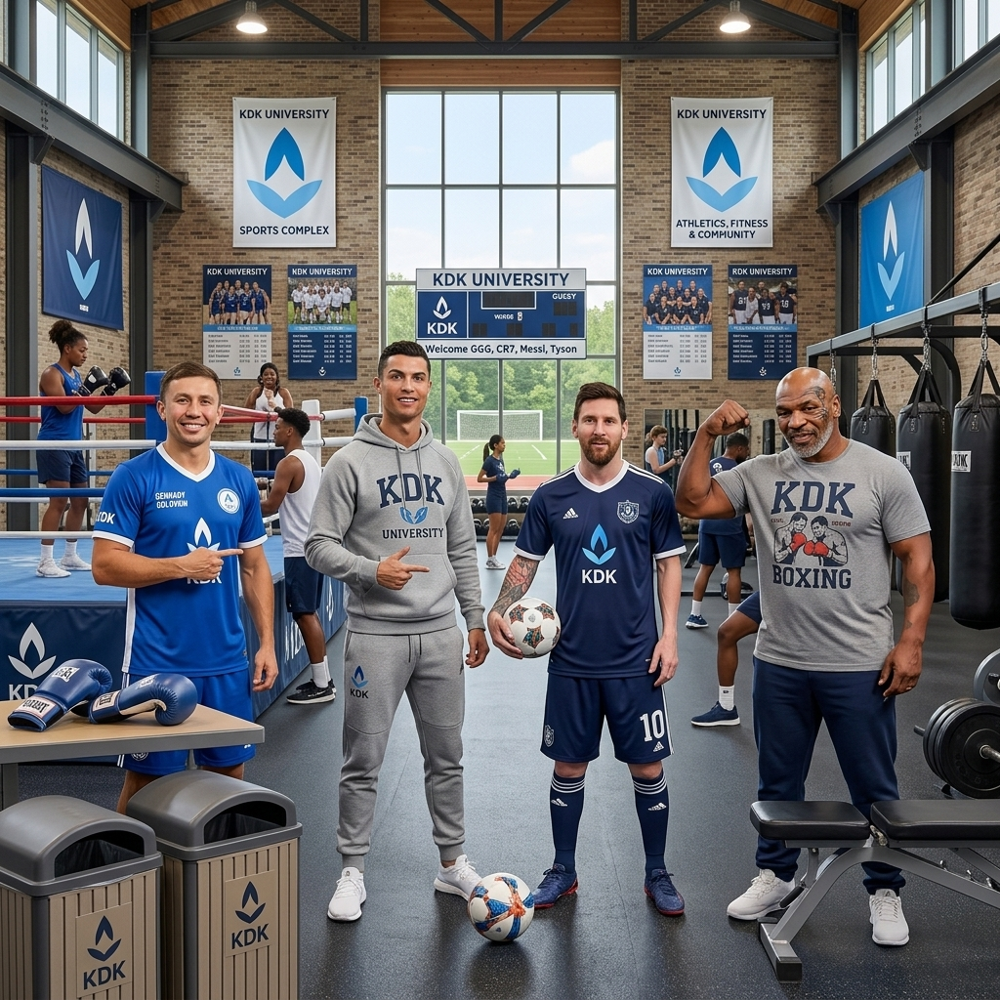

Discover your subject
Compare our programs and find a course that fits your interests.
Browse programs →
KDK University
Explore technology, develop practical skills and find your community. Your next chapter starts with a little curiosity.
Make it your own
Choose what you want to learn, meet people who share your interests and make room for the things you love.
Compare our programs and find a course that fits your interests.
Browse programs →

Start learning today
Discover reading ideas for your chosen subject from Open Library. These suggestions are not an official course reading list.
Choose a subject, then select Discover books. New results need an internet connection.
A few useful answers
Visit Programs to search by name or filter by subject. Open a program to compare the overview and study topics, then save your shortlist.
This is a fictional university built as a student project. The Admissions form demonstrates an application process and saves your entries only in this browser. No application is sent to a university.
Create a demo account or log in from the header, then open Profile. Please use fictional details and a password you do not use elsewhere.
Start with your interests. We will help you find the next step.